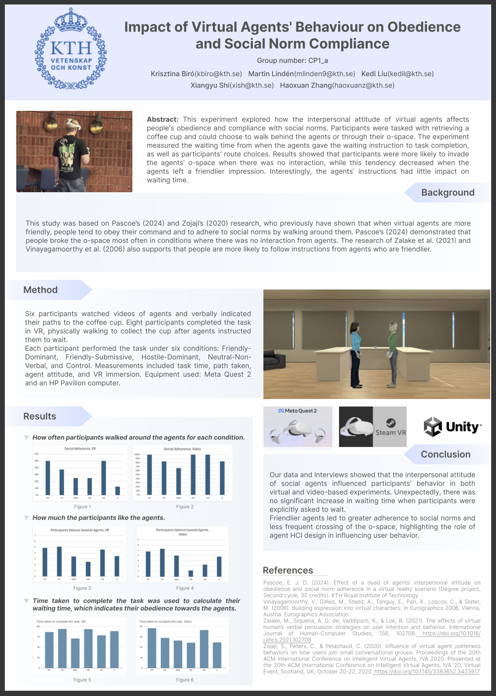

Research Project
Impact of Virtual Agents' Behaviour on Obedience and Social Norm Compliance
We conducted this research project as part of our course in Human Perception at KTH. Our study explored
how virtual agents' attitudes influence people's behavior and willingness to follow social norms. With
20 participants, we conducted experiments in both VR and video-based scenarios, where they had to retrieve
a coffee cup and choose whether to walk around or between two agents. The results showed that people were
more likely to cut through the agents' space when there was no interaction. Interestingly, participants
behaved more cautiously in video-based scenarios compared to VR. This research highlights how social
presence in digital environments can shape human behavior and has the potential to be further developed
and published.
Here is our project poster, highlighting the key aspects of our study design and main findings.
Here is our project poster, highlighting the key aspects of our study design and main findings.
